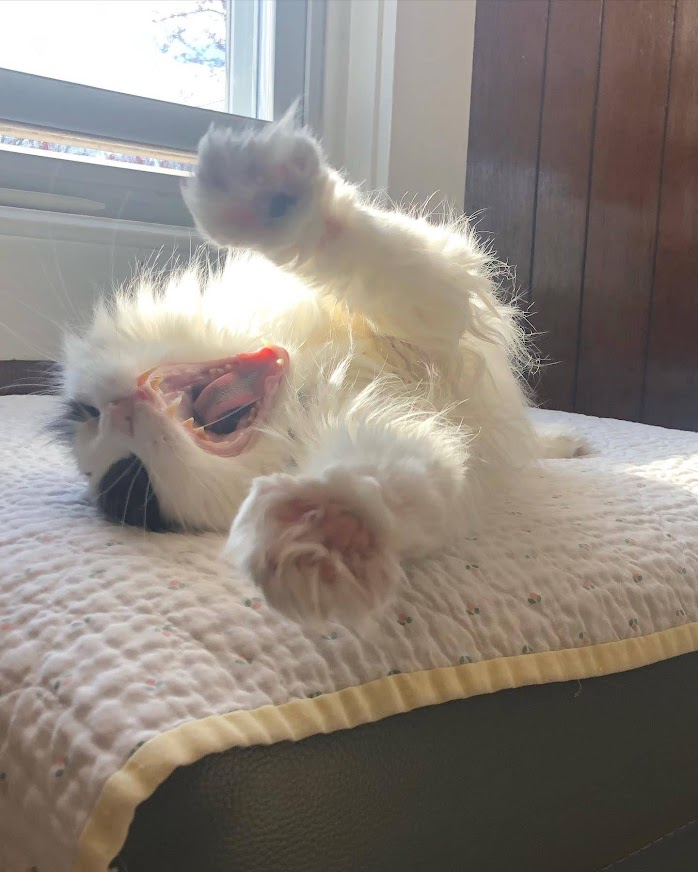
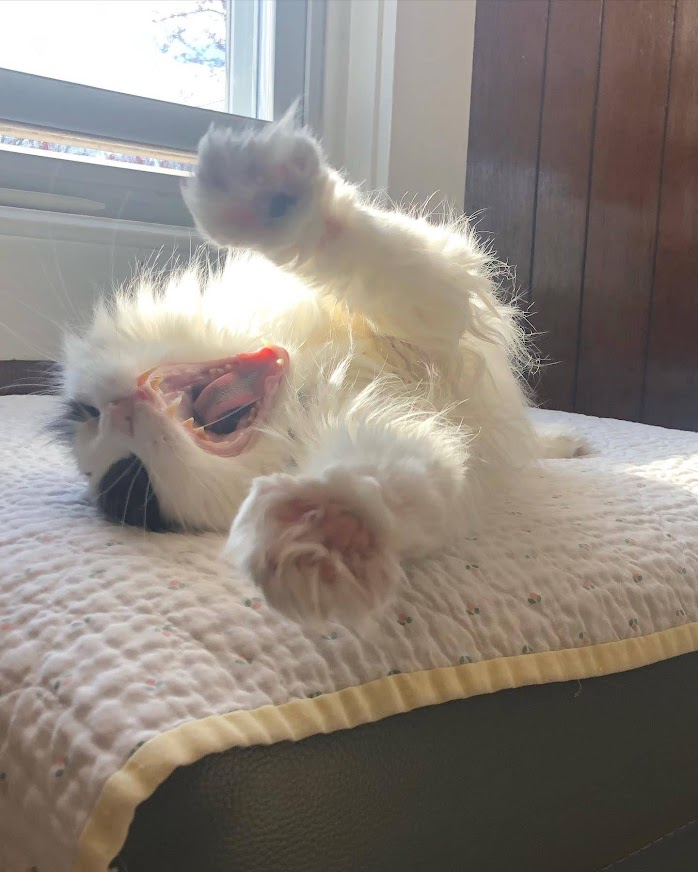

Truffles was born and adopted in 2007.
She had two gray twin brothers who were mirror images of one another.
Truffles grew up as a spoiled only cat. She is sassy and cares about her appearance.
She loves to go the the furthest corner of the house and scream at the top of her lungs.